Chapter 4 Multivariate Data Analysis
On previous sessions, we learnt how to analyse data containing one or two variables. We also learnt how to obtain data from public websites via web scraping. Now we are ready to take a step further and dive into data containing multiple variables. We call this type of data “multivariate”.
Multivariate data can have anything from 3 or 4 to tens, hundreds or even thousands of variables. Each of these variables can be seen as a dimension, so multivarite data is also multidimensional. The majority of data that surrounds us every day is multivariate. Some examples are the following:
Movement sensors in smartphones. These sensors are able to detect variables such as position, speed, acceleartion and angular movement at different points in time. Each of these measurements is a variable. Sensor data is particularly imporant in applications of internet of things (IoT).
Transaction data. Banks monitor several aspects of a transaction in real time. These aspects range from location to time of the day, to amount of money moved, reference of transaction, recipient’s account and others. Banks inspect these data in real time to detect outlier transactions, which can be frauds.
Genetic data. In several fields of genetics such as transcriptomics (the study of gene expression) it is common to measure the levels of tens of thousands of genes. Each gene will be recorded as a variable/dimension of our data set.
Before starting this tutorial make sure to listen to the theoretical session. This session will help you picture better what multivariate data is and how it behaves, despite not being able to see it with your eyes (since our eyes can only perceive three dimensions).
For completing this tutorial we will need to install three more libraries specifically designed for multivariate data analysis. You can do that by running the following code.
install.packages("gplots")
install.packages("corrplot")
install.packages("pheatmap")Let’s now load the libraries along with some of the libraries for data analysis we studied before.
library(HSAUR2)
library(ggplot2)
library(rafalib)
library(corrplot)
library(pheatmap)The data set “pottery” is part of the HSAUR2 package. It contains data from a 1980 study on specimens of very old Romano-British pottery found in archaeological sites in three different regions of Britain: Wales, Gloucester and New Forest. These pieces of pottery were analysed by atomic absorption spectrophotometry to determine their chemical composition. Chemists measured the levels of 9 different compounds in each piece of pottery (to be precise, 9 different types of oxide. Remember that, when creating pottery, clay is brought in contact with fire, and combustion is a type of oxidative reaction). They also added some information on the type of kiln (kind of oven) used to produced them.
Let’s have a first look at the data:
head(pottery)## Al2O3 Fe2O3 MgO CaO Na2O K2O TiO2 MnO BaO kiln
## 1 18.8 9.52 2.00 0.79 0.40 3.20 1.01 0.077 0.015 1
## 2 16.9 7.33 1.65 0.84 0.40 3.05 0.99 0.067 0.018 1
## 3 18.2 7.64 1.82 0.77 0.40 3.07 0.98 0.087 0.014 1
## 4 16.9 7.29 1.56 0.76 0.40 3.05 1.00 0.063 0.019 1
## 5 17.8 7.24 1.83 0.92 0.43 3.12 0.93 0.061 0.019 1
## 6 18.8 7.45 2.06 0.87 0.25 3.26 0.98 0.072 0.017 1Since the type of kiln is a category and not, like the rest of the variables, a number, we will not consider it for now. Let’s keep the other 9 columns of this table and store them in a variable called “pots”.
pots <- pottery[,1:9]The “pots” data has 9 dimensions (9 variables): each dimension corresponding to the levels of a chemical compound.
head(pots)## Al2O3 Fe2O3 MgO CaO Na2O K2O TiO2 MnO BaO
## 1 18.8 9.52 2.00 0.79 0.40 3.20 1.01 0.077 0.015
## 2 16.9 7.33 1.65 0.84 0.40 3.05 0.99 0.067 0.018
## 3 18.2 7.64 1.82 0.77 0.40 3.07 0.98 0.087 0.014
## 4 16.9 7.29 1.56 0.76 0.40 3.05 1.00 0.063 0.019
## 5 17.8 7.24 1.83 0.92 0.43 3.12 0.93 0.061 0.019
## 6 18.8 7.45 2.06 0.87 0.25 3.26 0.98 0.072 0.017Furthermore, we have measurements for 45 pieces o pottery in this data set:
dim(pots)## [1] 45 9We do not know which pieces come from Wales, Goucester or New Forest. Is there some way to find this out?
4.1 Exploring one variable at a time
Having 9 dimensions might be overwhelming, but each of these dimensions can be studied individually using all the methods we’ve learnt before. For example, let’s create density plots for each of the 9 variables:
mypar(3,3)
for(i in 1:9){
plot(density(pots[,i]), main=colnames(pots)[i])
}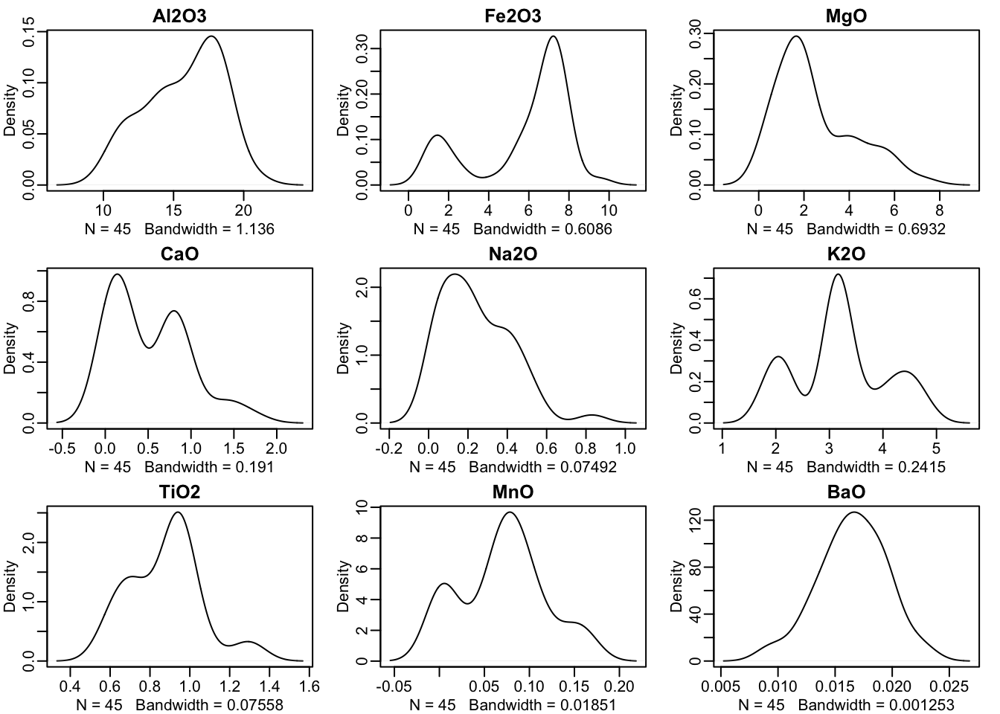
You can see that some chemical compounds (such as barium oxide, BaO) have the characteristic “normal” (bell-shaped) distribution. Others such as calcium oxide (CaO) or Potassium oxide (K2O), however, have very unusual distributions with several modes (“bumps”).
Let’s now take the first two compunds: Al2O3 and Fe2O3. Are their levels related? Do they covary? Let’s create a scatter plot to answer this question.
plot(pots$Al2O3, pots$Fe2O3, xlab="Al2O3", ylab="Fe2O3")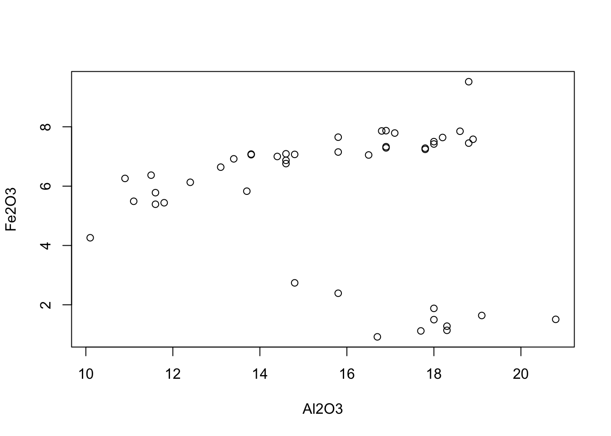
We see that for some pieces of pottery their is a possitive correlation, but for some other subgroup of pots the relation is negative. Could these come from two different locations? It is possible, but it is very difficult to conclude anything based on only 2 compounds.
Let’s try to add another dimension to the previous plot. We will use the color of the points to represent the levels of our third oxide, MgO. We do this using ggplot().
ggplot(data=pots, aes(x=Al2O3, y=Fe2O3)) + geom_point(aes(color=MgO), size=3) + theme_bw()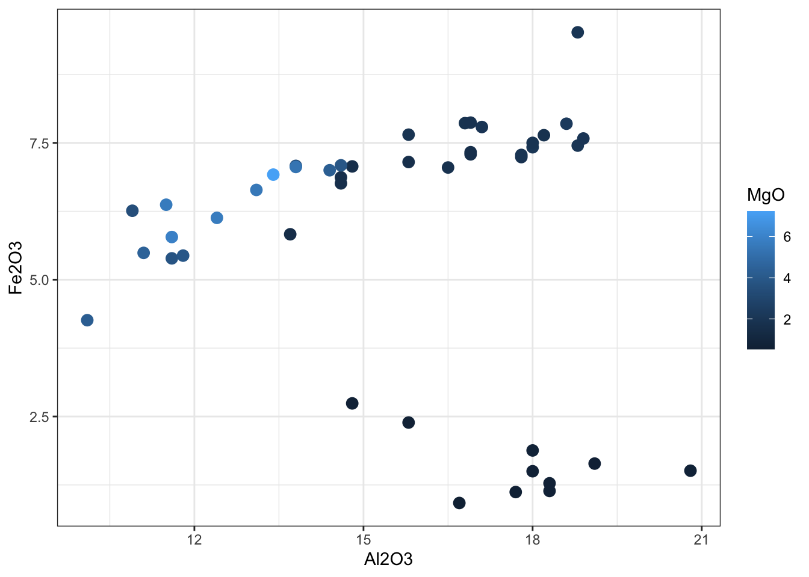
You can see that in general pottery with high levels of Fe2O3 also has high levels of MgO. But, again, it is difficult to conclude anything with only 3 compounds.
4.2 Analysing all variables jointly
4.2.1 Scatter plot matrices
We cannot represent more than 3 dimensions in a plot, and even three is sometimes too confusing. However, there are some tricks that allow us to look at multiple variables in an easier way.
For example, we can create scatter plots for all possible combinations of variables (in this case, all the combinations of our 9 variables). This might seem laborious. After all, we do have to create 81 different plots! However, R makes it very easy for us. We only need to use the function “pairs()”. R will automatically create plots for all possiblepairs of variables in our data set and arrange them as a matrix. We call this a scatter plot matrix.
pairs(pots, pch=".")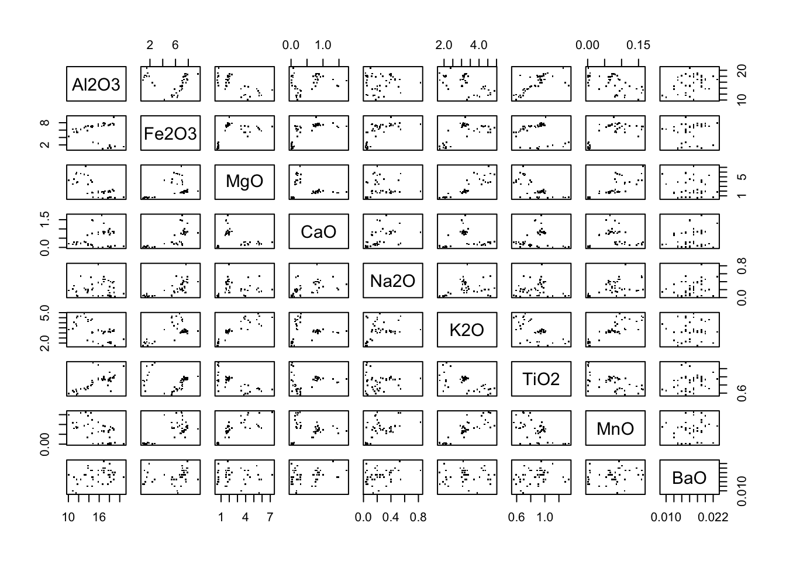
Note how the plots toward the middle (the diagonal) do not have any data on them: just the labels. This is because those plots would add no information at all: they would plot the relationship of a variable with itself, which is always a straight line. Thus, R omits them.
We begin to see some patterns. For example, if you look at the Fe2O3 column you’ll realise that there are usually two groups of pottery: one with high Fe2O3 and one with low Fe2O3. However, it is difficult to find any meaningful patterns by eye when so much data is being displayed.
To enhance this visulisation a little, let’s perform linear regressions for all of these combinations of variables. To do this, we use the pairs() function to create all the possible plots and we add a line (abline) with the “best fit” line (lm) for each combination of variables. In this way, R performs and plots 72 linear regressions in just one a few lines of code.
pairs(pots,
panel=function(x,y,...){
points(x,y,...)
abline(lm(y~x), col="grey")
}, pch=".")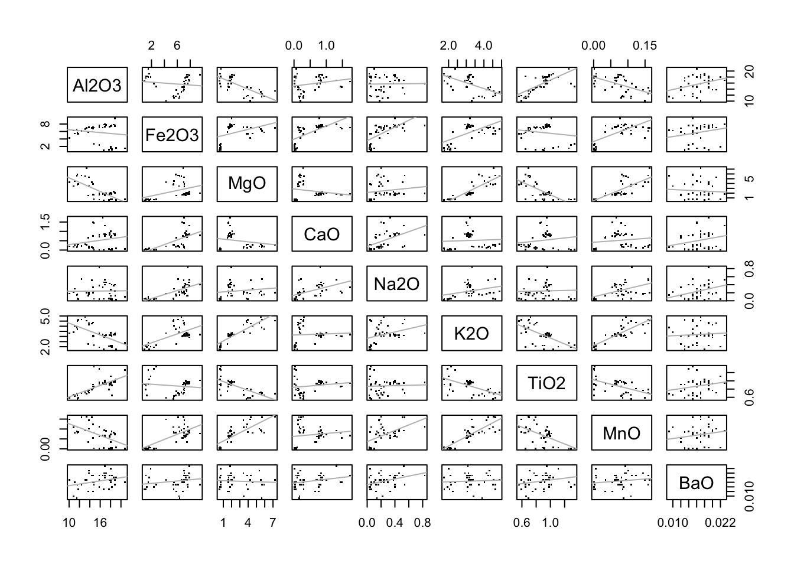
Some variables follow the line relatively well, for example MgO and K2O, but some others do not.
4.2.2 Correlation plots
Just like we can plot all possible pairs of variables, we can also calculate the correlation of all possible pairs of variables in our 9-dimensional data. For example, let’s focus on the first three variables.
The correlation of Al2O3 and Fe2O3 levels is:
cor(pots$Al2O3, pots$Fe2O3)## [1] -0.1396064And the correlation between Al2O3 and MgO is:
cor(pots$Al2O3, pots$MgO)## [1] -0.7324515Finally, the correlation between Fe2O3 and MgO levels is:
cor(pots$Fe2O3, pots$MgO)## [1] 0.3932271We can go on for all 81 combinations. The easiest way to do this in R is simply applying the cor() function to our data. R immediately understands that what you want is to calculate not only one correlation, but all of them. These are stored in a matrix which is often called the “correlation matrix”.
corrmat <- cor(pots)head(corrmat)## Al2O3 Fe2O3 MgO CaO Na2O K2O TiO2 MnO BaO
## Al2O3 1.00000000 -0.1396064 -0.7324515 0.23170316 0.01631415 -0.61126911 0.70311435 -0.5669065 0.31438288
## Fe2O3 -0.13960637 1.0000000 0.3932271 0.66265034 0.67373208 0.61576101 -0.14583752 0.6700777 0.21126543
## MgO -0.73245149 0.3932271 1.0000000 -0.18583362 0.14955077 0.87409305 -0.68681267 0.7836910 -0.06647407
## CaO 0.23170316 0.6626503 -0.1858336 1.00000000 0.51609482 0.05627038 0.16486290 0.1414132 0.24928394
## Na2O 0.01631415 0.6737321 0.1495508 0.51609482 1.00000000 0.32363840 0.04242872 0.5336162 0.36574697
## K2O -0.61126911 0.6157610 0.8740931 0.05627038 0.32363840 1.00000000 -0.60413756 0.8504619 0.06980577Note how the correlations we calculated above are at the top left corner of the matrix. Also note that the diagonal of the matrix contains only 1s. This is because the correlation of a variable with itself is always 1 (because they are the exact same thing!). Finally, also note that column 1 row 2 has the same numbe as column 2 row 1. The same is true for column 1 row 3 and column 3 row 1, and so on. In fact, the section of the matrix above the diagonal (the “upper section”) is exactly the same as the section below the diagonal. Just as if we had placed a mirror in the diagonal and taken the mirror image. We call these type of matrices symmetric. Correlation matrices are always symmetric.
Remember that correlations go from -1 to 1. Negative correlations represent negative relationships, and the same is true for positive correlations. Thus, one way of finding out how similar each variable is to each of the other variables (how correlated they are) is by visualising this matrix. We can assign to each element of the matrix a color or the size of a circle. The plot generated is called a “correlation plot”.
To create a correlation plot in R, simply use the “corrplot()” function and specify where your correlations are stored, as follows.
corrplot(corrmat)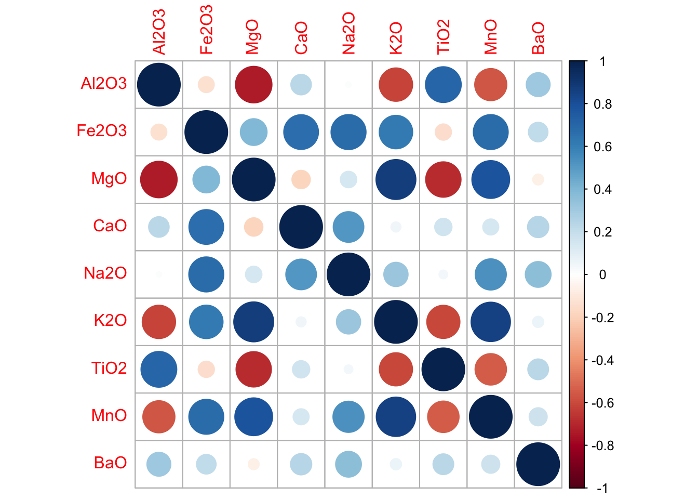
Notice how the diagonal is full of ones (dark blue). The shading and the size of the circle are proportional to the correlation. This plot is also symetric, because correlation matrices are symmetric. Thus, we can eliminate one half of it without losing any information. Let’s keep only the upper part:
corrplot(corrmat, type = "upper")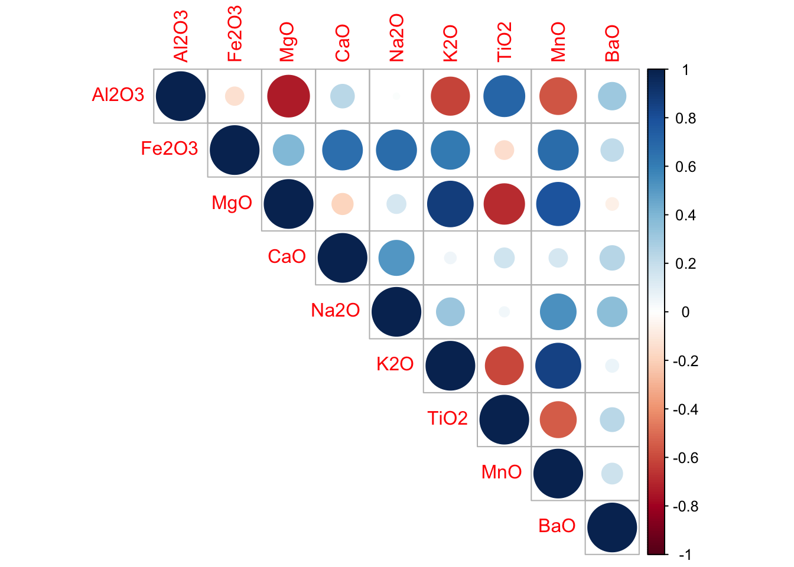
Now we can at last start making sense of this multivariate data. We see, for example, that levels of Fe2O3 are correlated with almost everything else. When Fe2O3 increases, CaO also icreases, as well as Na2O and MnO. However, MgO and Al2O3 have a negative correlation: when one increses the other decreases. What else can you see?
4.2.3 The distance matrix
As said before (and as discussed in previous sessios) each variable in our data set can be seen as a “dimension”. This has to do with data having “geomtric” properties. What this means is that our data set can be seen as a “space of 9 dimensions” where each of the pottery specimens is a dot with precise coordinates.
Because each row in our matrix can be thought of as a “point in space”, we can actually calculate the distance between any two points. This distance is impossible to visualise or imagine by human minds, because our own world only has a few dimensions and not 9, but this distance exists mathematically!
To calculate the distance between the pottery specimen 1 and 2 in this 9-dimensional space, for instance, we use the equation for Euclidean distances. This equation is one of the fundamentals of analytical geometry and comes from the pythagorean theorem, but we will not explain it in depth here.
The distance between pottery 1 and 2 is the following:
sqrt(sum((pots[1,1:9] - pots[2,1:9])^2))## [1] 2.924741And the distance between specimen 1 and 3 is as follows:
sqrt(sum((pots[1,1:9] - pots[3,1:9])^2))## [1] 1.986228Just like we did above with correlations, we can calculate the distance between all possible pairs of pottery specimens. These distances are, again, arrange into a matrix we call the “distance matrix”. R has an easy function to do that in just one line The function is called “dists()” and you only need to specify where your data is stored, as follows:
distmat <- dist(pots)Let’s look at the first 6 rows and columns of this distance matrix
as.matrix(distmat)[1:6,1:6]## 1 2 3 4 5 6
## 1 0.000000 2.9247408 1.9862278 2.9665151 2.5016339 2.0789250
## 2 2.924741 0.0000000 1.3493762 0.1273460 0.9307723 1.9647203
## 3 1.986228 1.3493762 0.0000000 1.3717146 0.5909323 0.7228651
## 4 2.966515 0.1273460 1.3717146 0.0000000 0.9600542 1.9911768
## 5 2.501634 0.9307723 0.5909323 0.9600542 0.0000000 1.0743021
## 6 2.078925 1.9647203 0.7228651 1.9911768 1.0743021 0.0000000Just like with the correlation, the distance matrix is symetric. This is because the distance from speciment 1 to specimen 2 is the exact same as the distance between specimen 2 and speciment 1. Also, note that the diagonal is made of zeros. This is because the distance between a point and itself is always zero: they occupy the same position in space!
4.2.4 Clustering and dendrograms
We can use the matrix of distances to find which points are close to each other in space, and which are seaprate. What this tells us in the real world is which pieces of pottery are very similar to each other, and which are different. This process of identyfing “subgroups” or “substructures” in the data is called “clustering”.
One of the most common methods for clustering data is “hierarchical clustering”“, which works by building a dendrogram. A dendrogram is a type of tree (just like a family tree). In our case, we will build a tree in which each pot is closest to the most similar pot and farthest from the most dissimlar pot.
To do this in R we use the function hclust(). Let’s store the results in the variable “tree”.
tree <- hclust(distmat)Now let’s plot the results:
plot(tree)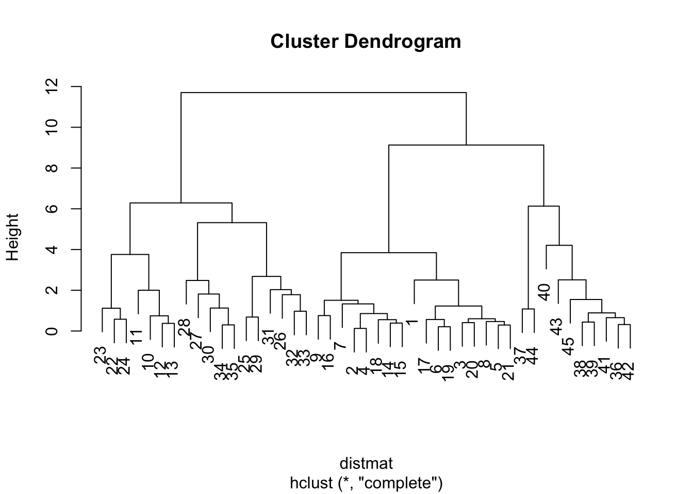
This plot tells us a lot about the data! In fact, you can see that there are three groups (three big branches in the tree). We call these groups “clusters”. Because we know that the pottery used for this study comes from three different areas of the UK, we can postulate that each of these three clusters may correspond to a different location. We have found which pots belong to which region!
4.2.5 Heatmaps
However, in the tree above all we know is which pots belong to which group (or region). We do not know what characterises each pot: what makes Gloucester pottery different from Wales pottery? We cannot know. A way to gain more insights into this is by using a very creative type of visualisation: “heatmaps”.
Heatmaps are dendrograms (trees) in which, for each individual element (in this case, each piece of pottery), we also get to see the value of all the variables (in this case the levels of each chemical element). You might be surprised this is possible at all. Above, we tried all sorts of methods to look at this data and yet we could not see more than 3 variables at a time! So how do heatmaps achieve this?
The answer is that they cheat! They “deceive” our eyes. The way they do this is by assigning an order to colours. Colours do not have any natural order (blue is not bigger than green or yellow), but we can order them according to some scheme; for example, their position in the rainbow. A common practice is to say that blue is “lower” than “red” because blue is cold and red is hot (this is why they are called heatmaps). This is, of couse, arbitrary but it works surprisingly well! Now we can visualise each chemical element in each pot as a very thin stripe of colour. Because the pieces of pottery (and, in fact, the chemical compounds too) are ordered using a tree (hierarchical clustering) things which are similar will be close to each other in the plot. Putting similar things together helps our eyes detect patterns much better. In fact, patterns are amplified by the heatmap for us to see them.
Let’s use he pheatmap() funciton (phemap stands for “Pretty HEATMAPs”) to create a heatmap of our data. We will set the colours to go from blue (cold) to red (hot).
mycolors <- colorRampPalette(c("blue","white","red"))(1000)
pheatmap(pots, scale = "column", col=mycolors, fontsize_row = 5)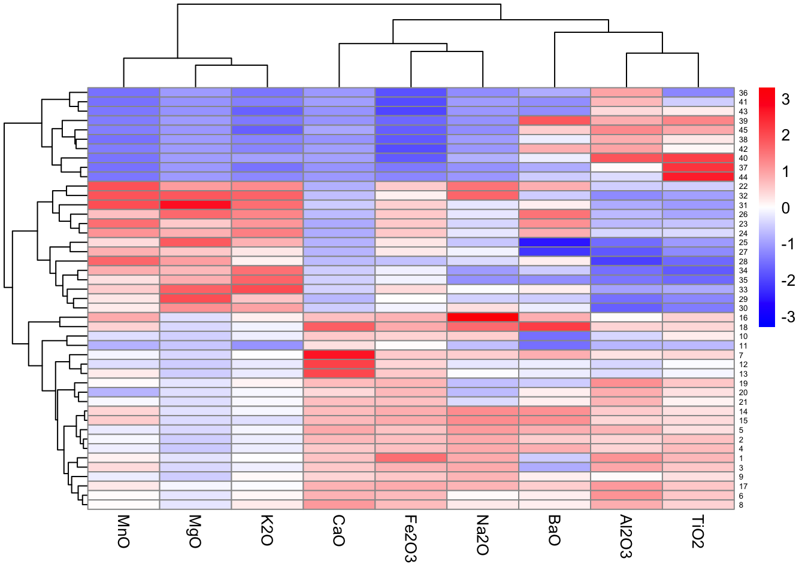
Now we are getting a lot of useful information out of the data! We see that there are two clear groups of pots (which we believe correspond to the regions where the pottery comes from). Pots of the first region have relatively high levels of everything except aluminium and titanium oxides (Al2O3, Ti2O3). Pots of the second region contain high levels of magnesium, manganesum and potasium ozides (MnO, MgO, K2O) but lower levels of everyting else. Finally, pots from the third region contain high levels of almost everything (especially calcium oxide), but low levels of MnO, MgO and K2O.
4.3 Exercises
Before going into the next section, you will have time to work on your project data. You can start by asking the following:
- How many variables on your project data set are numerical? Which are these? You can focus on them. These will include the variables you looked at in previous sessions
- For all these variables, create a scatter plot matrix. If possible, add a “best fit” line
- Calculate the correlation and distnace matrices
- Plot the correlations as a correlation plot. Which variables are related to each other?
- Use the distance matrix to perform clustering and create a tree. Do you have any subgroups in your data?
- Create a heatmap. What does this heatmap tell you about your data? Is this something you could’ve learnt from analysing the variables separately?
4.4 Reducing the number of dimensions
In the previous sections we used different techniques to analyse all the 9 variables in our data. However, sometimes this is impossible to do. What if we don’t have 9 or 10 or 15 but 150 or 15,000 variables? In big data this is common (hence the “big” in big data).
There is another way of analysing multiple variables in which, instead of analysing all of them, we “reduce them”. This means, we use the 9 or 10 or 100 dimensions we have to create just 2 or 3 new (and better) dimensions. These new dimensions are combinations of the original ones. This is analogous to creating new (better) axes by rotating our original axes around. In the theoretical part of this session you will learn in more detail what this means and how dimensions can be reduced. However, the mathematics behind this are quite complicated and thus will not be explained here.
The best known method for reducing dimensions is called “Principal Component Analysis” (PCA). To perform PCA in R you can use the function “prcomp()”. Let’s perform PCA on our data:
PCs <- prcomp(pots, scale. = T)Now let’s have a look at the results:
summary(PCs)## Importance of components:
## PC1 PC2 PC3 PC4 PC5 PC6 PC7 PC8 PC9
## Standard deviation 2.0503 1.5885 0.93699 0.67538 0.61647 0.51840 0.34325 0.30190 0.2846
## Proportion of Variance 0.4671 0.2804 0.09755 0.05068 0.04223 0.02986 0.01309 0.01013 0.0090
## Cumulative Proportion 0.4671 0.7475 0.84501 0.89570 0.93792 0.96778 0.98087 0.99100 1.0000You will see that now, instead of the original 9 chemical compunds, we have 9 new dimensions. These dimensions are called “Principal Components” (PCs). You might think that this is not really a reduction, because we had 9 dimensions originally and we ended up with another 9! However, PCs are ordered by importance and most of the times you will not need more than the first two or three of them. For example, in this case PC1 and PC2 together already account for 74% (0.46 + 0.28) of the variance (differences we see) in our data. So plotting these two dimensions is almost equivalent to plotting the 9 original ones.
Let’s plot the first two PCs:
plot(PCs$x, pch=19)
We immediately see there are three groups of samples, which are probably the same we identified before with hierarchical clustering. You might be wondering what each of these PCs mean. What is a PC? How is it related to any of the chemical compounds we originally had? The answer depends on the data: PCs will have a different meaning for every data set you work with. Let’s find out what they mean in this specific example.
Above I mentioned that each PC is a different “combination” of the original 9 variables, in the output below we can see how much each compund is contributing to each of the PCs.
PCs## Standard deviations (1, .., p=9):
## [1] 2.0503433 1.5884850 0.9369854 0.6753828 0.6164727 0.5183982 0.3432531 0.3019006 0.2845736
##
## Rotation (n x k) = (9 x 9):
## PC1 PC2 PC3 PC4 PC5 PC6 PC7 PC8 PC9
## Al2O3 -0.34829631 0.32780562 0.119014979 -0.03608198 0.32219091 -0.776136871 -0.017576097 0.21945465 -0.03319629
## Fe2O3 0.32709620 0.39525949 -0.264444108 -0.02114131 0.34343318 -0.045613182 0.243749457 -0.50439926 0.48222510
## MgO 0.43456923 -0.18964741 0.150918366 0.05350702 0.28126791 -0.009243254 -0.442140420 0.49189525 0.48259499
## CaO 0.06428531 0.50119655 -0.477928669 -0.49719394 -0.06858469 0.226593748 -0.171170581 0.39348466 -0.16992250
## Na2O 0.21717586 0.45551237 -0.007020976 0.57759974 -0.53034971 -0.157645754 -0.321107660 -0.04474717 -0.02090327
## K2O 0.45633257 -0.01837517 0.102097013 -0.03872041 0.38892815 -0.078842428 -0.309777858 -0.28554772 -0.66672244
## TiO2 -0.34019754 0.30078403 0.089583383 0.49161094 0.49299846 0.520801535 -0.005608328 0.14702257 -0.09032883
## MnO 0.45522720 0.08753781 0.140202878 0.15303057 -0.02199131 -0.048867577 0.718184163 0.42728179 -0.20199070
## BaO 0.01854192 0.37839957 0.791553826 -0.38466339 -0.13551441 0.198520122 -0.024441118 -0.11359903 0.10329608For example, PC2 (the vertical axis in our previous plot), which distinguishes one of the pottery regions from the other two, is mostly a combination of high CaO and Na2O, but low MgO and K2O. This probably corresponds to region number two in our heatmap (see above).
4.4.1 Combining dimensionality reduction with clustering
Now let’s combine both of the approaches we’ve learnt. We first used the distance between pottery specimens to build a dendrogram or tree, in which we saw three different groups. This is our tree:
plot(tree, main="Dendrogram of pottery samples", xlab="")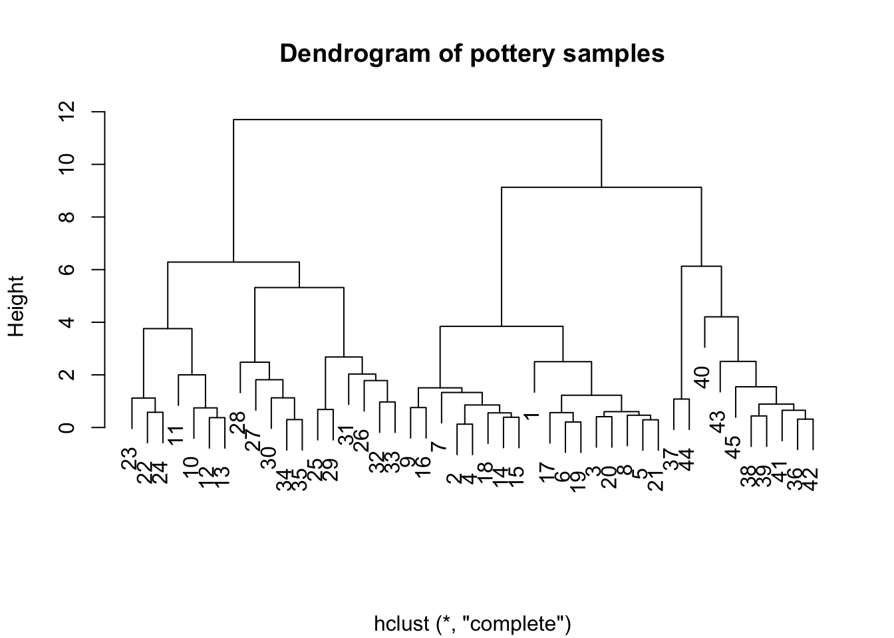
Then we use PCA to reduce the dimensions and we also found three groups. These are the results:
plot(PCs$x, pch=19)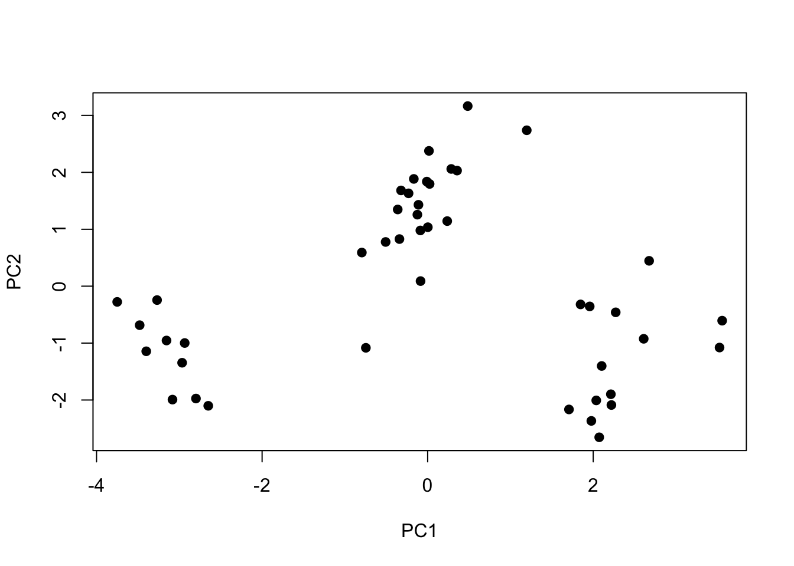
Are these two results equivalent? Do they indicate the same 3 groups?
To verify this, let’s recover the three groups in our tree (dendrogram). If you look at the tree you’ll see that, if you “cut”/“slice” the branches of the tree close to height = 8, you get the tree groups. Let’s use the function “cutree()” to do this and store the results:
pot.types <- cutree(tree, h=8)The result of this is a list of numbers which tell us which pot specimen belongs to which group (groups are 1, 2 and 3).
pot.types## 1 2 3 4 5 6 7 8 9 10 11 12 13 14 15 16 17 18 19 20 21 22 23 24 25 26 27 28 29 30 31 32 33 34 35 36 37 38 39 40 41 42 43 44 45
## 1 1 1 1 1 1 1 1 1 2 2 2 2 1 1 1 1 1 1 1 1 2 2 2 2 2 2 2 2 2 2 2 2 2 2 3 3 3 3 3 3 3 3 3 3Now let’s draw the PCA plot again, but adding these labels. Group 1 will be represented by points, group 2 by triangles and group 3 by crosses.
ggplot(data=as.data.frame(PCs$x), aes(PC1,PC2)) + geom_point(shape=pot.types, size=3) + theme_bw()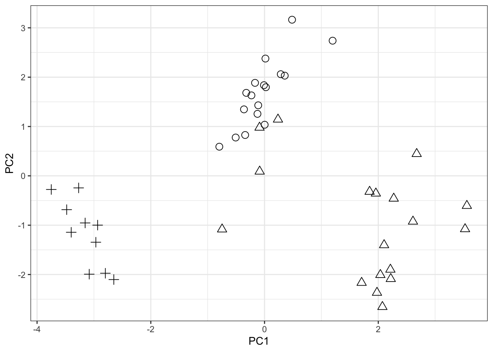
We see that the conclusions from both methods are ALMOST the same, though there are only 4 pieces of pottery that are classified into different groups/regions by the two methods.
Now you know how to reduce the dimensions of a data using PCA. This might still be confusing since dimensionality reduction is a difficult concept to grasp. However, in the next sessions there will be more exercises to help you understand how PCA is used to analyse multi-dimensional data.
4.5 Exercises
You will now have some time to explore your project data. A good starting point would be:
- Take the numeric variables you were working with before and perform PCA on them
- Look at the PCs: how many will you need to summarise your data?
- Plot the first two PCs. What do they tell you about the data? Do you need to plot any other PCs?
- Look at the contribution of each variable to your PCs. What does each of your PCs mean?
4.6 References
This session was based on fragments from the following book:
- Everitt B, Hothorn T. (2011). An Introduction to applied multivariate analysis with R. London: Springer.
- A. Tubb and N. J. Parker and G. Nickless (1980), The analysis of Romano-British pottery by atomic absorption spectrophotometry. Archaeometry, 22, 153–171.